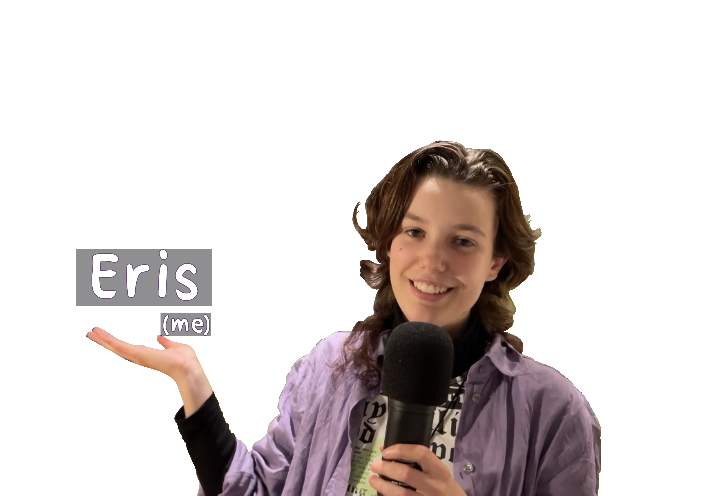

About

Hi! I'm Eris Thijs, an illustrator and animator from the Netherlands.
"Love kills."
It’s quite a dark phrase to center your work and interests around, but for me, it describes them all too well. I like the duality that this phrase adds to the concept of love, a contrast between the goodness of the love we know, and the darkness that accompanies that good.
They are intertwined, one and the same.
Now, this is all a quite dramatic way of saying that I like stories.
I have a soft spot for tragedies and characters that are morally grey faced with impossible decisions. To me, stories are a way to explore and share
feelings and thoughts that are much harder to explain and experience safely in the real world. Sharing stories, even if they’re fictional,
creates bonds between people, it connects them.